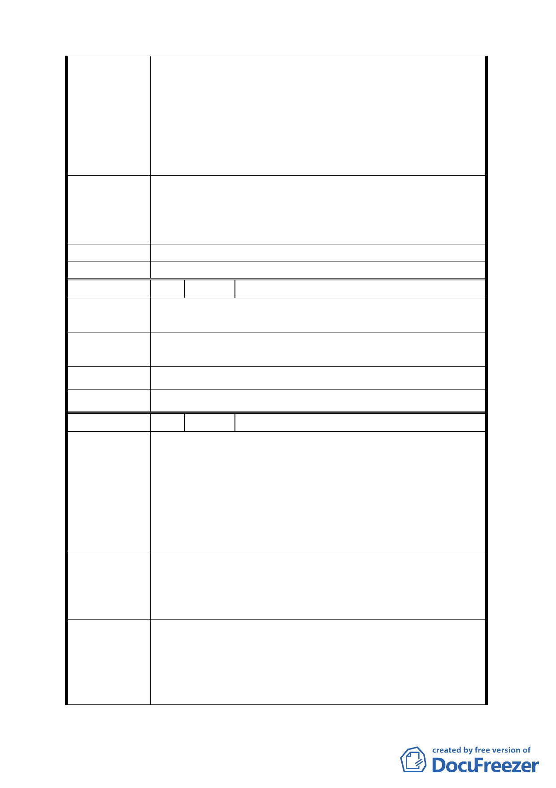

區如：林口、三重、新莊等。
四、 大彎南段目前已有六家大型量販店進駐，每逢假日都
要實施交通管制，如再加上花市開始營運，交通問題
令人困擾，而且容易進出之基地都已被各大量販店進
駐，剩餘之未開發基地大都面臨較窄之道路，且基地
散落在不同街廓，不利拖車或大貨車進出，要發揮倉
儲業之功能有實際之困難性。
大彎南段工業區（供倉儲使用），街廓編號 G1~G10 部分之
土地使用管制，建議取消其供第三十八組倉儲業使用之容
建 議 辦 法 積樓地板面積應達申請基地總容積樓地板面積之二分之ㄧ
以上。
發展局回應 同編號 5-發展局回應內容。
委員會決議 同編號 5 決議。
編 號 8 陳情人 陳兆樑、陳文輝、謝梅
本倉儲區因有樓地板面積限制，降低建商開發意願，同時
陳 情 理 由 亦影響產業進駐意願。
取消容積樓地板面積亦達申請基地總容積樓地板面積之二
建 議 辦 法 分之ㄧ之限制。
發展局回應 同編號 5-發展局回應內容。
委員會決議 同編號 5 決議。
編 號 9 陳情人 祭祀公業藍引（管理人：藍淥喬）
一、 內湖第五期重劃區為加速本區發展，建議比照基隆河
（中山橋至成美橋段）附近地區土地使用分區與都市
設計管制要點計畫案第四條，鼓勵街廓內基地合併使
陳情理由
用，以促進基地大型化之開發。
二、 本期公告（96.12.20）放寬使用項目增加 53、54 項
目，實在本末倒置，本重劃區內如允許公害較輕或公
害較重之工業進駐，勢必污染環境品質。
一、 可針對 1/4 街廓以上且面積大於 3,000 平方公尺之基
地，給予容積之獎勵及高度放寬。
建 議 辦 法 二、 其公告表列組別編號 51、52、53、54 應全部給予刪
除，以提升本區優異之環境品質，祈請務必採納。
一、經查內湖第五期重劃區依據 90 年 9 月 14 日公告計畫
案，為提升土地開發效益，配合產業用地特性，已明
發展局回應
確規範重劃區內屬特定專用區部分需採大規模開發，
其中工商混合區部分建築基地不得小於 1500 平方公
尺；辦公服務區（一）、部分辦公服務區（二）以及部
12